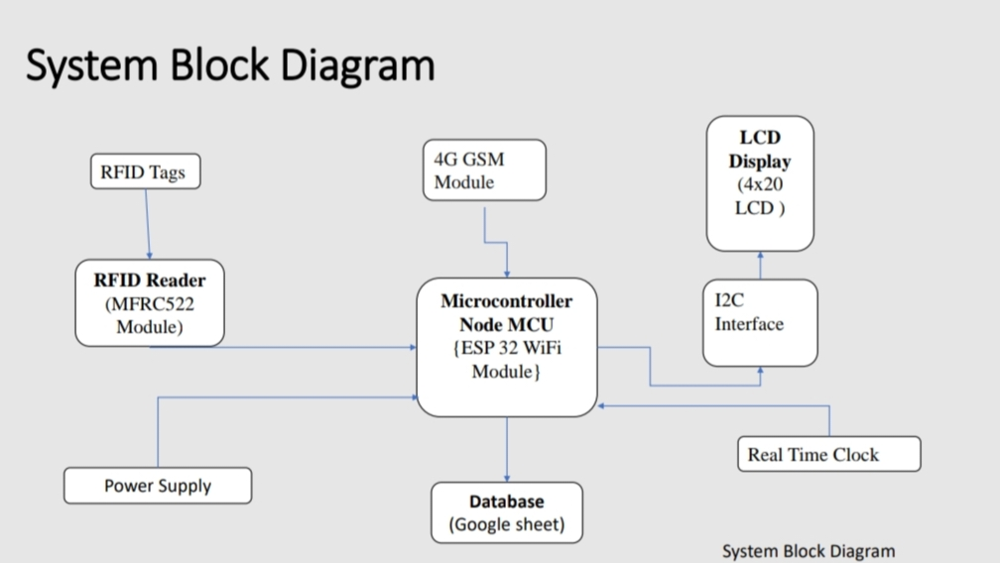

Content
- Introduction
- Litrature Review
- RFID
- Methodology
- Block Diagram
- Flow Chart
- Results and discussion
- Conclusion and future work
Introduction
- In modern organizations, managing attendance efficiently is crucial.
Traditional methods often fall short, leading to inaccuracies and
administrative burdens.
- To address these challenges, we're leveraging RFID and IoT
technologies. RFID tags and IoT connectivity allow for automatic
attendance tracking, real-time monitoring, and streamlined data
management.
- This project aims to design, implement, and evaluate an RFID and
IoT-based smart attendance system, enhancing accuracy and efficiency
in attendance management processes.
Objectives
- Automated Attendance Tracking: Develop a system capable of automatically
recording student attendance using RFID tags/cards.
- Real-Time Monitoring: Enable real-time monitoring of attendance data for
administrators and teachers to track student presence.
- Parental Notification: Implement SMS notification functionality to inform
parents/guardians about their child's attendance status.
- Data Management: Integrate Google Sheets for centralized data storage and
easy access to attendance records.
- Security and Privacy: Implement security measures to protect student data and
ensure compliance with privacy regulations.
Litrature Review
- RFID (Radio Frequency Identification)
RFID (Radio Frequency Identification) technology is a system that uses radio waves to
transmit data from an RFID tag to a reader, which then processes the information. [1]
- IoT integration
IoT integration refers to the process of incorporating Internet of Things (IoT) devices,
systems, and technologies into existing infrastructures or applications to enable enhanced
functionality, automation, and connectivity. When it comes to integrating IoT with RFID
technology, it typically involves combining RFID tags, readers, and middleware with IoT
platforms and systems to create smart, connected environments. [3]
- SMS Notification Systems
SMS (Short Message Service) notification systems in education play a vital role in
facilitating communication between educational institutions, students, parents, and faculty
members. These systems enable timely delivery of important information, announcements,
and updates via text messages. [5]
- Integration of Google Sheets for Data Management
Integrating Google Sheets for data management offers a convenient and collaborative
solution for organizing, analyzing, and sharing data within educational institutions. [7]
- Security and Privacy Considerations
When implementing an RFID and IoT-based attendance system, it's crucial to address
security and privacy considerations to protect sensitive data and ensure the system's
integrity. [9]
Methodology
Initialization
Check connectivity
Scan Student ID
Using RFID Tag
Authenticate ID
Mark Attendance
and Send
Notification to
parent
Update Google
Sheet
Display Name
& Time
On LCD Display
Repeat process
Shutdown
Click here to view flowchart
Step by step description of process:
- Initialisation:
- Power on the system.
- Initialize the RFID reader, GSM module, RTC, EEPROM, buzzer, LCD screen, and establish WiFi connectivity.
- Check connectivity:
- Ensure that the ESP32 is connected to a WiFi network.
- If not connected, attempt to establish a connection.
- Read RFID Tag:
- Continuously monitor the RFID reader for tag detection.
- When a tag is detected, read its unique ID.
- Authenticate Tag ID:
- Compare the read tag ID with the database of authorized student IDs.
- If the ID is valid, proceed to mark attendance, send SMS notification to parents, and
update the Google Sheet.
- If not, display an error message on the LCD screen and sound the buzzer
- Mark Attendance and Send Notification:
- Get the current date and time from the RTC.
- Store the student's ID, date, and time in the EEPROM as attendance records.
- Trigger an SMS notification to the student's parents using the GSM module, informing
them about the attendanc
- Update Google Sheet:
- Use Google Sheets API to update the administrator's Google Sheet with the attendance
information.
- Update the sheet with the student's ID, date, and time of attendance.
- Display Information:
- Show relevant information on the LCD screen.
- Display attendance status, system status, or error messages as needed
- Repeat process:
- Continuously loop through steps 3 to 7 to handle multiple tag detections and attendance
marking.
- Shutdown:
- Gracefully power off the system if required.
System Block Diagram
(click on the below image to view fullscren)

Components and software:
- ESP 32 WiFi Module
- Reader Module (RFID MFRC522)
- RFID Tags/Cards
- 4G GSM Module
- 4x20 LCD Screen
- DS 1307 Real Time Clock
- Arduino Integrated Development Environment (IDE) software
- Google sheets API